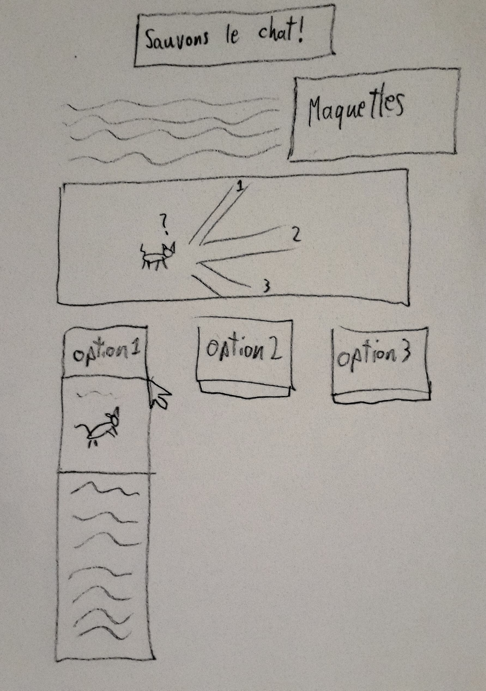
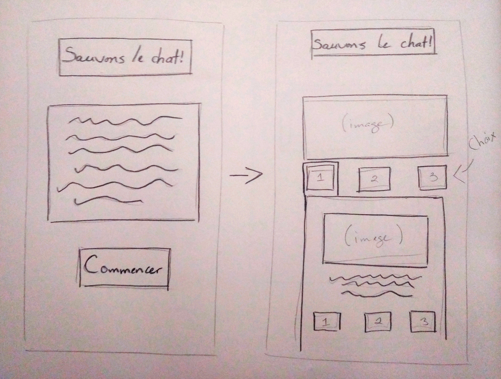

Sauvons le chat!
Présenté par Jade Apestiguy et Philip Grenier
Définition du projet
Un site web d’histoire interactive dans laquelle il faut permettre à Eric, un petit chat roux et égaré, de retourner chez lui sain et sauf en passant par des chemins inconnus. L’utilisateur du site détient trois options de chemins différents se manifestant sous forme de boutons qui, lorsque cliqués dessus, révèlent les conséquences de leur choix sous forme de texte et d'images additionnelles. Notre projet est inspiré des expériences interactives telles que “The Moral Machine” ou les livres de type “Choose your own adventure” ainsi que du livre de technique scénaristiques “Save the cat”.
Maquette




Survol des techniques
Le site web serait de type dynamique, donc nous devrons utiliser un peu de JavaScript. Les interactions seront simples. Par exemple, l’interaction principale sera d’appuyer sur un bouton qui révélera la suite de l’histoire que l’utilisateur aura choisi. L’utilisation du HTML et du CSS serviront essentiellement à la mise en page et au style du site. Des recherches seront encore nécessaires pour ce qui est du JavaScript sur comment écrire les lignes de codes dont nous aurons besoin.